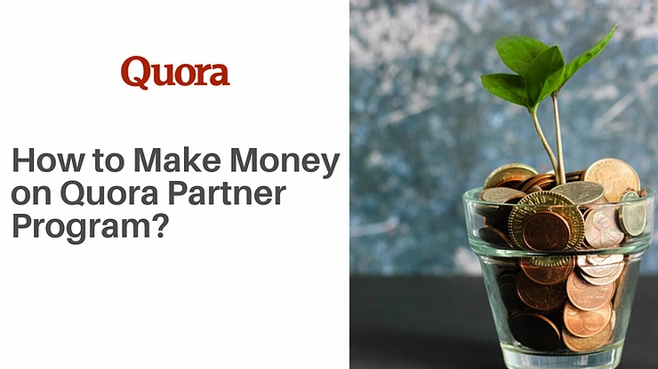
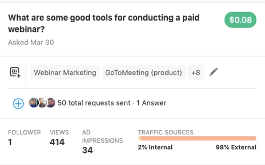
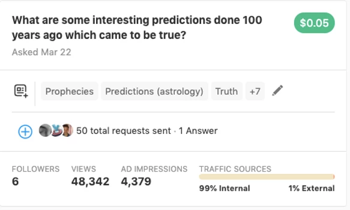
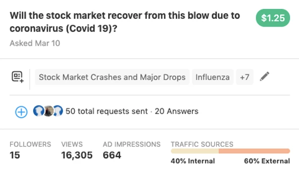
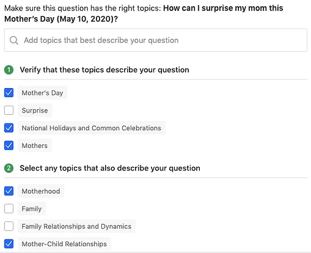

You might all have at least once got an insightful answer from Quora . Like that it provides solutions to questions ranging across all sorts of topics you can think of.
Well, I have been an active quora user for the last 4 years. I would sometimes write answers to some questions to which I thought I could provide value.
One day I got a message from quora saying that I am invited to something known as " Quora Partner Program ". Basically, from now onwards I would get paid for asking questions in Quora.
According to many sources, your content needs to be viewed by more than 100,000 times in the platform to get the invitation to join the program in 2020. Although I got invited when I only had somewhere around 55,000 views.
For me, it is quite legit this far. But I have read some articles saying they got kicked out of the program when it was time for the payment without any particular reason. My opinion is to go for it since Quora is a trusted brand and you can bank on them.
Now, you might have already got invited to the partner program, but might not be getting your targeted revenue from the program. Here are some suggestions that I learned from my experience to increase the chances of earning more from your questions:
Where does the money come from? Advertisers pay quora to put up ads of their products or services in between the answers to your questions. It might be in the form of simple text ads, promoted answers or any other forms.
They have this option of targeting "Keywords" or topics to which only the ad will be displayed.
For example, if a hosting provider is doing a campaign in quora, they might only put up ads of their service among the answers to questions which may have the keyword "Website" or "Hosting". This is done in order to get the attention of only those people who are interested in the topic of website building since they have a higher chance of purchasing the hosting services.
Hence, if you have these kinds of a keyword in your question they will attract more ads from businesses. Then you'll end up getting way more ad impressions for your question.
Here's something I did to prove this:
The above question has the keyword "Webinar" in it. Hence it brought me $0.08 from just 414 answer views. Targeted ads are costlier, thus more money for me too.
In this question, there is no particular keyword that any brand may target. Hence I got only $0.05 from 48,342 views! No advertisers, no money!
If you type in any query in Google, the chances are that there will be a quora question in the first page of results. This is because of trust Google has for the site.
Think of what new things are people going to search on google. You can use Google trends to analyse this . After taking up a topic, curate a simple question phrasing it the way you think people are going to search for it on Google.
Here's an example question I asked:
This is almost a perfect question. I asked this when Covid-19 started hitting the stock markets hard. hitting the stock markets hard. Now this question ranks on the first page of Google Search hitting the stock markets hard. . Also since it has the keyword "Stock market" in it, there are lots of ads displayed under it.
Yes, if you are looking for sheer numbers, you got to ask really
interesting questions to which you may get awesome answers from hardcore
quora users. This is going to help your question get tens and thousands
of views inside the quora community.
Here's an example:
Look at the number of views for the answer:
- Select only the right topics

As you can see, since the question is about Mother's day, I'm skipping
"Surprise" and some other topics that I think is irrelevant.
- Ask people who answer a lot
I'm only selecting those people who answer a lot. Carefully choose only
active users in quora to fill that 25 request quota that quora offer per
day.
- Check whether the same question has been asked by someone else.
It's not easy, but if you make a plan and stick to a schedule of asking
questions with the above-mentioned point of view, you are going to
create a new passive income stream for yourselves.
Thank you for reading!
It took me more than 3 months time to write this blog. You can
buy me a coffee
It took me more than 3 months time to write this blog. You can if you
want me to analyse your quora account :)
[About the author: Jaison Thomas is an entrepreneur, speaker & writer. He co-founded the digital marketing agency, Blusteak .]
 +91 77366 95526
+91 77366 95526
 info@blusteak.com
info@blusteak.com